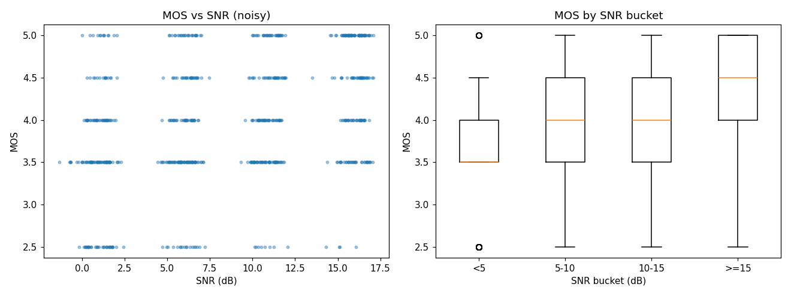
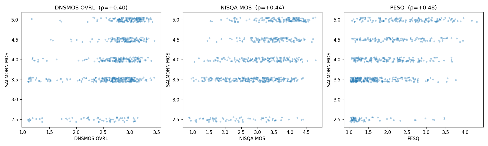
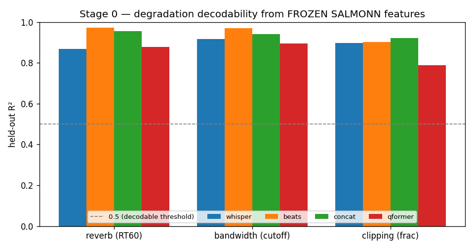
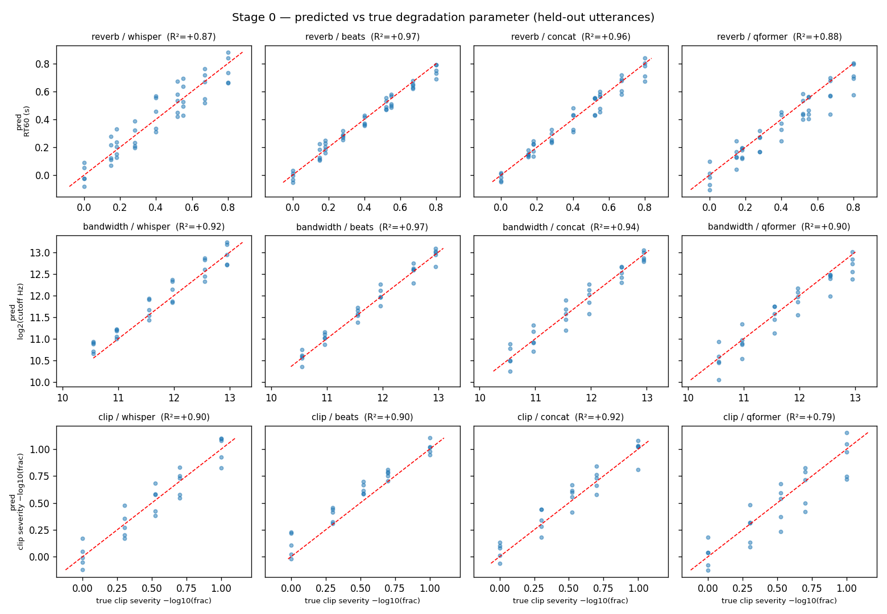
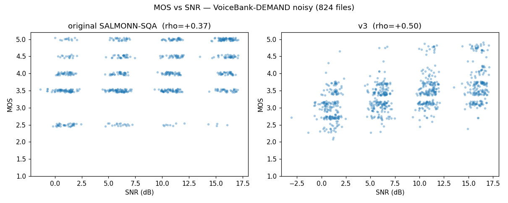
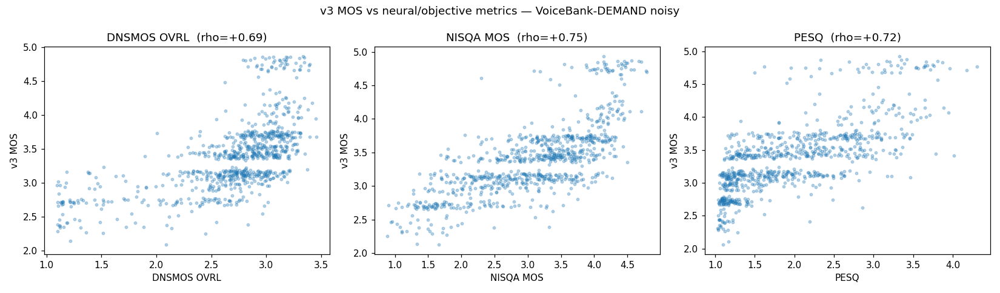
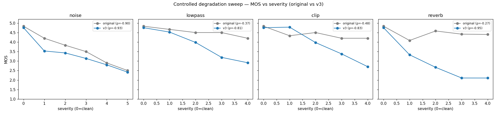
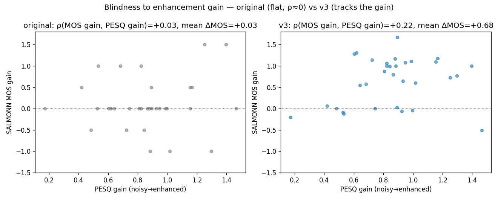
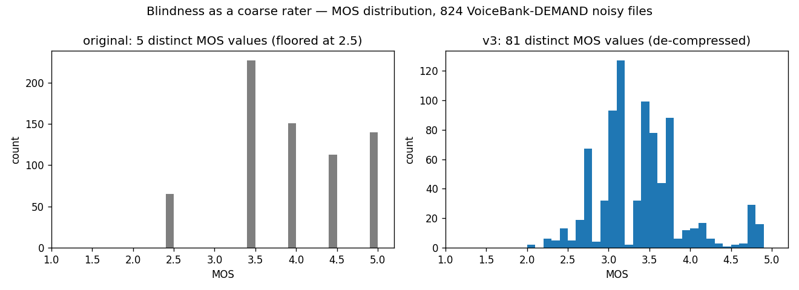

Turning a lenient noise specialist into a model that perceives, names, and scores every common degradation — and emits a de-compressed, calibrated MOS.
Clement Laroche · final model ckpt_stage2_v3 · LibriTTS-R → VoiceBank-DEMAND held-out
An audio LLM: two frozen encoders → a trained audio bottleneck → spliced into a frozen Vicuna-7B with a small LoRA adapter.
<SpeechHere>. TRAINED.Plan B trains only the green blocks + LoRA. Encoders stay frozen.
The SQA checkpoint described additive noise well — but as a quality meter it was weak and blind to whole degradation classes.
Coarse 5 discrete values, floored at 2.5. Agrees with PESQ/NISQA/DNSMOS at only ρ 0.40–0.49 — yet those metrics agree with each other at 0.72–0.82. It's the outlier.
Reverberation: ρ(MOS,severity) = −0.11 (essentially no response). Weak on bandwidth (−0.39) and clipping (−0.33).
Run a denoiser: every objective metric improves, MOS moves +0.03. Useless as an automatic enhancer evaluator.
Under out-of-distribution degradation it sometimes collapsed into a made-up JSON schema. And it was acquiescent — leading yes/no prompts → always "YES".
Goal: keep the descriptive ability; add perception + calibration across all degradations.

MOS barely tracks SNR, and the cloud sits in a narrow high band — the floored, compressed scale.

Against DNSMOS / NISQA / PESQ the MOS is quantized into a few horizontal stripes — weak rank agreement (ρ 0.40–0.49).
Whisper is reverb-invariant and the Q-Former compresses 17:1. If reverb/bandwidth info is destroyed in the frozen front-end, no LoRA training can recover it — we'd need to unfreeze the encoders (much heavier). So probe before you train.
The blindness lives in the LLM's learned read-out (only ever trained on noise), not the architecture. If true, the fix is data + targets, not surgery on the encoders.
Apply graded degradations with known parameters, extract features at four taps of the frozen model, fit a linear probe (standardize → PCA → ridge), score by R²+Spearman, held out by utterance.
A linear probe is the whole point: it tests whether the info is linearly decodable — present and accessible — not buried in a tangle.
| tap | what it is |
|---|---|
whisper | Whisper output (1280-d, frozen) |
beats | BEATs output (768-d, frozen) |
concat | [whisper|beats] — feeds Q-Former |
qformer | Q-Former+proj — the bottleneck that reaches the LLM |
Result — PASSED. R² 0.82–0.95, Spearman 0.90–0.98 at every tap, including the Q-Former output.
Decision: keep encoders frozen; fix = data + targets.

Held-out R² per degradation × tap — all well above the 0.5 "decodable" line, including qformer.

Predicted-vs-true RT60 / cutoff / clip-fraction sit tight on y=x at every tap — including the qformer bottleneck that feeds the LLM.
So the degradation reaches the language model intact. The original model was simply never taught to read it — its read-out head was trained only on additive noise.
Note: each axis is probed one-at-a-time, so this proves per-axis detectability, not type-discrimination. Discriminating which degradation is the residual that the v3 synthetic-type data fixes.
train-clean-100 — 4,000 clips (seed 1)dev-clean — 300 clips (seed 7)| axis | how | train count |
|---|---|---|
| reverb | real measured RIRs + synthetic exp-decay | 2,783 |
| noise | real MUSAN + synth white/pink/brown | 512 |
| codec | real Opus/MP3 → folds to bandwidth | 509 |
| bandwidth | Butterworth low-pass | DSP |
| clipping | hard-clip | DSP |
| discontinuity | frame-drop | DSP |
| loudness | re-gain | DSP |
| clean | untouched | 373 |
A blind-spot-weighted sampler gives each clip 0–3 axes. The real+synthetic mix is the v3 addition — it closes the train/eval gap, since the held-out sweep uses synthetic degradations the earlier corpus never saw.
Eight real-world degradation classes, each scored 1–5 from its exact applied parameter (5 = pristine, 1 = severe) — noise-free supervision the model can't game.
| axis | parameter → score bands |
|---|---|
| noise | SNR dB: ≥30→5, 20–30→4, 12–20→3, 6–12→2, <6→1 |
| reverb | RT60: <.25→4, –.45→3, –.70→2, >.70→1; DRR<−15 → −1 |
| bandwidth | cutoff Hz: ≥7500→5, –6000→4, –4000→3, –2500→2, <2500→1 |
| clipping | clipped frac: 0→5, <1%→4, –5%→3, –15%→2, >15%→1 |
| discontinuity | loss rate: 0→5, <2%→4, –5%→3, –10%→2, >10%→1 |
| loudness | |Δ gain| dB: ≤3→5, –6→4, –12→3, –20→2, >20→1 |
From exact degradation params (above). The direct fix for "the quality prior overrides the named dimension".
0.55·min + 0.45·mean of the dimension scores (worst-axis-dominant), then blended 70/30 with a fused PESQ + NISQA + DNSMOS metric MOS, to 2 decimals.
Pure metric fusion was tried and rejected: PESQ floors on any reverb and DNSMOS is reverb-blind — they can't rank the very axes we need.
Templated facts → Opus 4.8 paraphrase → grounding-verified prose, sampled per clip.
Input: waveform + sqa_full instruction.
Stage 1 target: the score block only — learn the calibrated numbers first.
Stage 2 target: score block + paraphrased description + Overall MOS — describe & rate on top of the calibration.
Cross-entropy is applied only to target tokens; the prompt and the 88 audio embeddings are masked to −100.
Instead of updating Vicuna's 7B frozen weights, we learn tiny low-rank adapters (r=8, α=28) injected into its attention/MLP projections — a few million trainable params that re-shape the read-out without disturbing the base language model.
Trainable: Q-Former + speech→LLaMA projection + Vicuna-LoRA.
Frozen: Whisper, BEATs, Vicuna base (Stage 0 said encoders can stay frozen).
CE loss on target tokens only; audio embeds + prompt masked.
| stage | target text | from | ep |
|---|---|---|---|
| 1 — calibration task sqa_score | per-dimension score block only | released SQA ckpt | 2 |
| 2 — reasoning task sqa_full | scores + description + Overall MOS | Stage 1 best (strict=False) | 4 |
Learn the calibrated numbers in isolation first (no description tokens competing for the gradient), then teach the model to describe and emit MOS on top of a representation that already rates correctly. Calibrate → then reason.
Held-out: synthetic degradation sweep on VoiceBank-DEMAND clean (training used real RIRs/MUSAN/codec on LibriTTS — disjoint speakers).
| # | Original finding | v3 |
|---|---|---|
| 1 | MOS↔SNR ρ 0.37, lenient | ρ 0.50; penalizes low SNR; names noise 99% at low SNR |
| 2 | Calibration ρ 0.40–0.49 (outlier); 5 values floored at 2.5 | ρ 0.69–0.75 (inside the metrics' 0.72–0.82 band); 81 distinct values (2.10–4.89) |
| 3 | reverb −0.11, bw −0.39, clip −0.33 | reverb −0.95, bw −0.81, clip −0.83, noise −0.93 |
| 4 | Enhancement: MOS +0.03, ρ(gain,PESQ)≈0 | MOS gain +0.68 (76% of files), ρ +0.22 |
| 5 | Acquiescence — leading yes/no → always "YES" | emits calibrated discriminative scores; failure mode N/A |

MOS vs SNR — the v3 cloud spreads across the full range and slopes with SNR (was a flat high band).

v3 MOS vs DNSMOS / NISQA / PESQ — continuous and rank-aligned (ρ 0.69–0.75); the original's horizontal stripes are gone.

MOS vs severity across all axes — monotone downward everywhere, including the former reverb blind spot.

Enhancement: original MOS is flat noisy→enhanced; v3 MOS rises with the denoiser's gain (usable as an enhancer evaluator).

The single clearest picture of the fix: the original model only ever emitted a handful of MOS values, floored well above the bottom of the scale.
v3 uses 81 distinct values spanning 2.10–4.89 — it actually meters quality instead of bucketing it.
This de-compression is what lets the rank-correlations climb into the band where the trusted neural metrics agree with one another.
v3 turns a lenient noise specialist with a weak 5-value MOS into a calibrated, multi-dimensional rater:
The per-dimension structured scores are the most reliable signal. The whole fix was data + targets — encoders never unfrozen, validated up-front by the Stage 0 probe.
Scale clean pool to train-clean-360 for more speaker diversity · more degradation types & real recordings for far-OOD robustness · a small scalar regression head if any MOS banding remains.